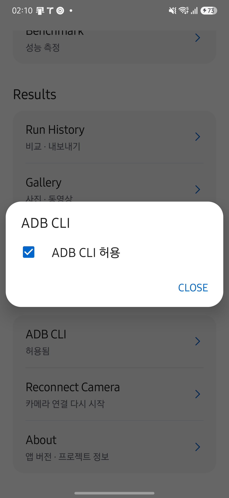

HAL CAMERA / Design Documentation
Control the camera with adb.
PC에는 adb만 있으면 됩니다. HAL CAM APK를 설치하고 앱의 Lab → ADB CLI에서 ADB CLI 허용을 켭니다. 기본값은 꺼짐이며 adb로는 켤 수 없습니다. 카메라 권한을 허용하고 화면 잠금을 해제합니다. 소리를 포함하여 녹화하려면 마이크 권한도 필요합니다.
아래 화면은 2026년 9월 29일 Galaxy S25+·Android 16에서 HAL CAMERA 0.15.0을 실행해 촬영했습니다. 촬영 조건과 확인 범위를 함께 확인하세요. 이미지를 누르면 원본이 열립니다.

무선 디버깅 기기는 adb connect IP:PORT로 연결합니다. 최초 페어링이 필요하면 기기의 무선 디버깅 화면에서 표시되는 주소와 코드로 adb pair IP:PAIR_PORT를 실행합니다. 연결 포트와 페어링 포트는 다를 수 있습니다. 여러 기기가 연결되어 있으면 아래의 모든 명령에 adb -s IP:PORT를 사용합니다.
앱에 포함된 스크립트를 기기에 한 번 준비합니다. APK를 업데이트한 뒤에도 같은 명령으로 갱신할 수 있습니다.
adb shell "content read --uri content://dev.halcamera.cli/v1/shell > /data/local/tmp/halcam"
이후 다음 명령을 사용합니다. 앱 열기, 요청 ID 생성, 완료 대기는 자동으로 처리합니다.
adb shell sh /data/local/tmp/halcam help
adb shell sh /data/local/tmp/halcam cameras
adb shell sh /data/local/tmp/halcam preview --camera 0
adb shell sh /data/local/tmp/halcam capture --camera 0
adb shell sh /data/local/tmp/halcam record start --camera 0
adb shell sh /data/local/tmp/halcam record stop
adb shell sh /data/local/tmp/halcam preview stop
adb shell sh /data/local/tmp/halcam status
카메라 ID의 기본값은 0이며, cameras로 사용 가능한 ID를 확인합니다. 사진은 YUV 변환 JPEG과 카메라 JPEG 두 장입니다. 녹화는 MP4이며 --no-audio로 무음 녹화를 선택할 수 있습니다. record start는 실제 녹화 시작을 확인한 뒤 반환하고, record stop은 MP4 저장과 결과 등록까지 기다립니다. 녹화 실행 제한의 기본값은 1시간이며, --timeout 초로 줄일 수 있습니다. 제한에 도달하면 녹화를 종료하고 요청에 시간 제한 오류를 기록합니다.
결과 파일이 있으면 기기의 Download/HALCamera-cli/요청ID에 크기와 SHA-256을 검증한 복사본을 준비하고, PC로 받는 adb pull 명령 한 줄을 출력합니다. adb pull은 CMD와 PowerShell에서도 바이너리를 그대로 복사합니다. 기기 복사본은 자동으로 삭제하지 않습니다.
--no-wait은 요청 접수 뒤 바로 반환합니다. 무선 연결이 끊겨도 같은 작업을 다시 실행하지 말고, 재연결 후 status 요청ID 또는 fetch 요청ID로 확인합니다. ID를 생략하면 스크립트가 마지막으로 제출한 요청을 사용합니다. cancel 요청ID로 취소할 수 있으며, 이미 제출한 사진 저장은 완료될 수 있습니다.
probe, cts cases, cts run --cases KEY[,KEY...]도 지원합니다. 벤치마크는 CLI 지원 범위에서 제외하며 앱 화면에서 실행합니다. Python halcam은 사진·probe·CTS 파일 수집을 위한 선택 도구입니다. 기본 CLI에 Python이나 pip는 필요하지 않습니다.
명령을 실행하세요
| 명령 | 동작과 결과 |
|---|---|
preview 또는 preview start |
선택한 엔진의 첫 프리뷰 프레임까지 기다립니다. 이후에도 프리뷰를 유지합니다. |
preview stop |
카메라를 닫고 프리뷰를 멈춥니다. |
capture |
선택한 카메라로 프리뷰를 준비하고 켜진 출력의 사진을 저장합니다. 기본값은 두 장입니다. |
record start |
프리뷰를 준비하고 영상 녹화를 시작합니다. 실제 시작을 확인하면 반환합니다. |
record stop |
현재 CLI 녹화를 끝내고 저장 완료까지 기다립니다. 화면에서 시작한 녹화는 멈추지 않습니다. |
streams |
선택한 카메라와 엔진의 스트림 크기·녹화 옵션을 조회합니다. |
cameras |
논리 카메라와 물리 endpoint를 조회합니다. selectable: true인 논리 ID를 선택합니다. |
probe |
카메라 사양 JSON과 TXT를 만듭니다. 카메라를 열지 않습니다. |
cts cases |
실행할 수 있는 CTS 항목의 키와 마이크 필요 여부를 조회합니다. |
cts run --cases KEY[,KEY...] |
선택 항목을 체크리스트 순서로 실행하고 보고서를 저장합니다. |
status [UUID] |
지정한 요청이나 마지막 제출 요청을 조회합니다. 제출 기록이 없으면 앱 상태를 표시합니다. |
cancel [UUID] |
지정한 요청이나 마지막 제출 요청을 취소합니다. |
fetch [UUID] |
완료된 요청의 파일을 다시 준비하고 adb pull 명령을 안내합니다. 촬영을 반복하지 않습니다. |
CTS 키는 custom:fast_on_off나 vendored:android.hardware.camera2.cts.RecordingTest#testBasicRecording과 같이 목록에 나온 값을 그대로 사용합니다. CTS 실행 제한은 기본 1,800초이며 최대 3,600초입니다. 사진·프리뷰·probe는 기본 30초입니다. Android 8–9에서 사진이나 영상을 저장할 때에는 저장소 권한도 필요합니다.
녹화 준비에는 최대 30초를 기다립니다. 멈출 CLI 녹화가 없을 때 record stop을 호출하면 NOT_RECORDING으로 거부합니다. 화면을 벗어나 녹화가 종료되면 RECORDING_INTERRUPTED로 기록하여 정상적인 record stop 완료와 구분합니다. 완료 기록은 최대 24시간·200개를 보관합니다. CLI는 Android 사용자 0을 대상으로 합니다.
스트림 크기를 지정하세요
지원 목록을 먼저 조회한 뒤 프리뷰·촬영·녹화 명령에 크기 옵션을 붙입니다. 엔진의 기본값은 Camera2이며, CameraX를 사용할 때에는 조회와 실행 모두에 --engine CameraX를 지정합니다.
adb shell sh /data/local/tmp/halcam streams --camera 0
adb shell sh /data/local/tmp/halcam streams --camera 0 --engine CameraX
adb shell sh /data/local/tmp/halcam preview --camera 0 --preview-size 1280x720 --yuv-size 640x480 --jpeg-size 1920x1080
adb shell sh /data/local/tmp/halcam capture --camera 0 --engine CameraX --yuv-size off --jpeg-size 1920x1080
adb shell sh /data/local/tmp/halcam record start --camera 0 --video-size 1280x720 --video-fps 30 --codec HEVC --no-audio
adb shell sh /data/local/tmp/halcam record stop
--preview-size, --yuv-size, --jpeg-size, --video-size는 너비x높이 형식을 사용합니다. YUV와 JPEG는 off로 끌 수 있지만, capture에는 적어도 하나가 필요합니다. --video-fps는 녹화 프레임 레이트이고 --codec은 Camera2에서 H264·HEVC, CameraX에서 Auto를 사용합니다. CameraX의 실제 녹화 코덱은 라이브러리가 선택합니다.
생략한 값은 기본 설정을 사용하며 이전 UI·CLI 설정을 이어받지 않습니다. 적용한 설정은 명령 완료 후 Live에 남지만 다음 CLI 카메라 명령은 다시 기본값과 명시한 옵션으로 구성합니다. 지원하지 않는 값은 PREFLIGHT_FAILED로 거부하며 다른 크기로 자동 변경하지 않습니다. 지원 목록은 개별 크기와 인코더 조건을 나타내며 출력 조합의 성공까지 보장하지 않습니다. 실제 세션 구성에서 실패할 수도 있습니다.
preview 완료 결과와 녹화 시작 상태의 result.streams에서 적용된 크기를 확인할 수 있습니다. Provider 직접 호출에서는 --extra preview_size:s:1280x720, --extra engine:s:CameraX처럼 문자열로 전달합니다. JSON 제출은 params.engine과 params.streams 객체를 사용하며, 크기·FPS·코덱 값은 모두 문자열입니다. 예를 들어 "streams":{"preview_size":"1280x720","yuv_size":"off"}로 전달합니다.
Provider를 직접 호출하세요
스크립트 없이도 content call로 직접 호출할 수 있습니다. 응답의 json 값은 사람이 읽을 수 있는 JSON이며 Base64 변환은 필요하지 않습니다. 사진·프리뷰·녹화·CTS 실행 전에 Live 화면을 엽니다.
adb shell am start -W -n dev.halcamera/.cli.CliLaunchActivity
adb shell content call --uri content://dev.halcamera.cli --method capture --extra camera:s:0
adb shell content call --uri content://dev.halcamera.cli --method record.start --extra camera:s:0 --extra audio:b:false
adb shell content call --uri content://dev.halcamera.cli --method record.stop
adb shell content call --uri content://dev.halcamera.cli --method cts.run --arg custom:fast_on_off
adb exec-out content read --uri content://dev.halcamera.cli/v1/status
CTS 항목만 --extra가 아니라 --arg로 전달합니다. --extra는 값을 키:타입:값으로 자르는데 suite 키에는 custom:이나 vendored: 접두어의 콜론이 들어 있어서, content가 앱에 닿기 전에 거부하기 때문입니다. 여러 항목은 쉼표로 이어 붙입니다.
직접 제출한 명령은 접수 결과를 반환합니다. 응답의 request_id로 /v1/requests/UUID를 읽어 완료를 확인합니다. --extra request_id:s:UUID로 같은 ID를 재사용하면 중복 촬영을 막을 수 있고, 다른 인자로 같은 ID를 쓰면 REQUEST_CONFLICT가 됩니다. timeout_ms:l:30000으로 실행 제한을 지정합니다. 알 수 없는 인자와 잘못된 타입은 거부합니다.
기존 Python 도구의 submit·cancel Base64 전송은 유지합니다. 지원 명령은 /v1/hello의 commands, 상태 조회·취소 등의 조작은 controls에서 확인합니다.
Python 클라이언트를 사용하세요
기존 자동화에서 Python 도구가 필요하면 다음과 같이 설치합니다. 녹화와 프리뷰 종료는 위의 ADB 스크립트를 사용합니다.
python -m pip install ./tools/halcam
halcam --serial DEVICE doctor --json
halcam --serial DEVICE streams --camera 0 --engine CameraX --json
halcam --serial DEVICE preview --camera 0 --engine CameraX --preview-size 1280x720 --yuv-size off --json
halcam --serial DEVICE capture --camera 0 --output ./photos --json
halcam --serial DEVICE probe --output ./probe --json
Python 도구의 --json은 stdout에 JSON 하나를 출력하며, --wait-timeout은 PC에서 기다리는 시간만 제한합니다. ADB 스크립트는 진행 메시지와 요청별 결과를 출력하고 성공 시 0, 오류 시 1을 반환합니다. 기계적으로 JSON만 처리하려면 직접 content read를 사용합니다. 파일 회수 실패에 대한 대응은 다음 절을 확인하세요.
요청이 끝나지 않거나 파일이 없을 때
status UUID로 앱의 상태를 확인합니다. PC의 대기 시간 종료는 앱 실행 실패를 뜻하지 않습니다.- 이미 파일이 생성되었다면
fetch UUID로 회수를 재시도합니다. 실패하거나 취소된 요청에도 파일이 남을 수 있습니다. - 파일 복사 오류와 앱의 촬영 오류를 구분합니다. 연결이 끊겼다는 이유만으로 새 요청을 제출하지 않습니다.
| 상태·오류 | 다음 행동 |
|---|---|
CLI_DISABLED |
앱에서 ADB CLI 허용을 켭니다. |
PERMISSION_REQUIRED |
앱에서 필요한 카메라·마이크·저장소 권한을 허용합니다. |
BUSY |
UI 또는 CLI의 현재 작업이 끝날 때까지 기다립니다. 기존 작업을 제어하는 record stop과 cancel은 실행 중에도 사용할 수 있습니다. |
interrupted |
앱 프로세스가 종료된 미완료 기록입니다. 남은 파일을 확인한 뒤 재실행 여부를 정합니다. 자동으로 재실행하지 않습니다. |
PREFLIGHT_FAILED |
streams로 지원 크기와 코덱을 확인하고 출력 조합을 줄입니다. |
UNKNOWN_CASE |
cts cases를 다시 조회하고 반환된 키를 그대로 사용합니다. |
REQUEST_CONFLICT |
같은 요청 ID에 다른 인자를 사용했습니다. 기존 요청을 조회하고, 별도 작업을 의도했다면 새 ID로 제출합니다. |
CLI 작업 중에는 화면 조작이 제한됩니다. 새 작업을 반복 제출하지 말고 기존 요청 ID로 상태를 확인하세요.
다음 단계: 에이전트에게 작업을 맡기는 방법은 Agents를 확인하세요.